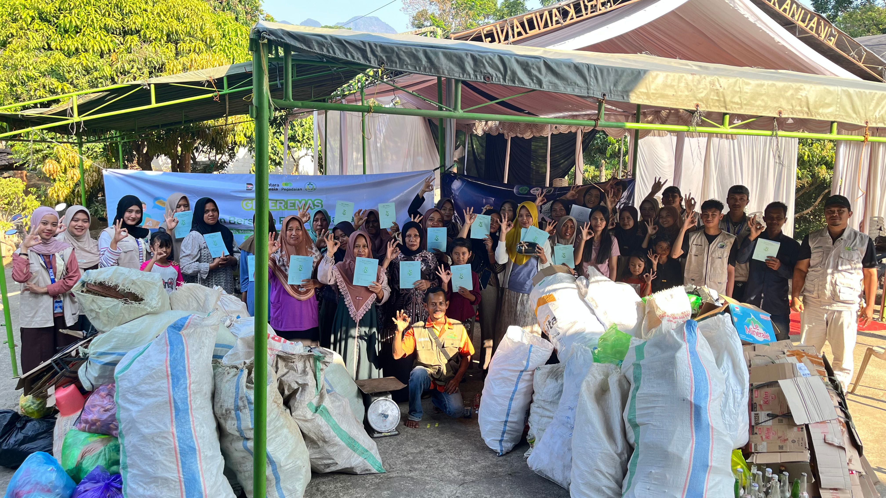
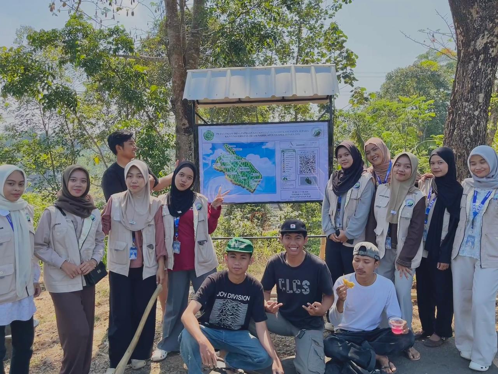
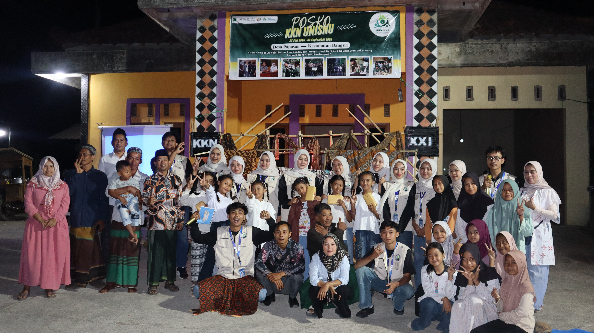

KKN UNISNU Jepara Rintis Bank Sampah di Dukuh Jroto untuk Dorong Pengelolaan Lingkungan Berkelanjutan
Mahasiswa KKN UNISNU Jepara rintis program Bank Sampah di Dukuh Jroto RT 10 & RT 11 sebagai upaya mendorong pengelolaan lingkungan berkelanjutan.
Baca Selengkapnya
UNISNU Jepara Dampingi Zafata Kopi Ciptakan Produk Turunan Kopi Berbasis Zero Waste
Pendampingan UMKM Zafata Kopi Papasan Permai untuk menciptakan produk bernilai tambah non-konsumsi dari ampas dan biji kopi cacat.
Baca Selengkapnya
KKN UNISNU Ajak Siswa MTs NU Papasan untuk Jauhi Pernikahan Dini dan Pergaulan Bebas
Sebanyak 50 siswa-siswi MTs NU Papasan dibekali edukasi mengenai bahaya pergaulan bebas dan pentingnya growth mindset.
Baca Selengkapnya
Edukasi Pendidikan Berbasis Inovasi dan Lomba Daur Ulang Sampah
Kegiatan edukasi dan lomba daur ulang sampah di SDN 1 Papasan & MI NU Papasan bersama mahasiswa KKN UNISNU.
Baca Selengkapnya
KKN UNISNU Jepara Gelar Pelatihan Barista, Dorong Potensi Kopi Desa Papasan Jadi Peluang Usaha
Mahasiswa KKN UNISNU Jepara menggelar pelatihan barista bagi siswa MTs NU Papasan dan masyarakat umum untuk membuka peluang usaha berbasis potensi kopi lokal.
Baca Selengkapnya
Pelatihan Pemanfaatan AI untuk Pemasaran Digital, Logo, Label & Kemasan UMKM
Pelaku UMKM Desa Papasan mengikuti pelatihan pemanfaatan AI untuk pemasaran digital serta pembuatan logo, label, dan kemasan produk.
Baca Selengkapnya
Penerjunan Mahasiswa KKN UNISNU Jepara di Desa Papasan
Sebanyak 16 mahasiswa KKN Angkatan XXI UNISNU Jepara Tahun 2026 resmi diterjunkan di Desa Papasan.
Baca Selengkapnya
Kenalkan Teknologi AI, KKN UNISNU Jepara Perkuat Literasi Digital Masyarakat Desa Papasan
Mahasiswa KKN UNISNU Jepara sosialisasikan pemanfaatan AI untuk pemasaran digital kepada masyarakat Desa Papasan sebagai langkah awal peningkatan literasi digital.
Baca Selengkapnya
KKN UNISNU Jepara Dorong Promosi Wisata Desa Papasan Melalui Plang Digital dan Video Air Terjun Kedung Ombo
Dukungan promosi destinasi wisata Desa Papasan melalui plang informasi digital berbasis QR Code dan video sinematik Air Terjun Kedung Ombo.
Baca Selengkapnya
Penarikan KKN Unisnu Jepara di Desa Papasan Berlangsung Meriah, Diwarnai Pentas Seni dan 200 Porsi Bakso Gratis
Acara penarikan mahasiswa KKN digelar meriah dengan pentas seni, after movie, dan 200 porsi bakso gratis bagi masyarakat Desa Papasan.
Baca SelengkapnyaKegiatan Terpopuler
Edukasi Jauhi Pernikahan Dini & Pergaulan Bebas
29 Juli – 15 Agustus 2026
Edukasi & Lomba Daur Ulang Sampah
3–8 Agustus 2026